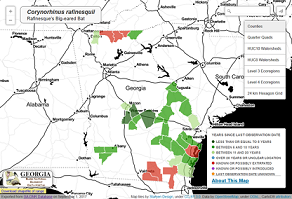

These range maps are generated using rare species occurrence and natural community data (aka element occurrences or EOs) exported from our (Georgia) NatureServe Biotics5 database. Each map displays the polygon features of a given range mapping unit that intersect rare element locations in our database. Range mapping units include counties, quarter quads, USGS watersheds, EPA ecoregions and 24 km hexagons.
Besides illustrating the distribution or range of Georgia’s rare species and natural communities, the maps also categorize units based upon the most recent observation of the element. This helps show where the element has been recently observed and where it may need to be targeted for additional survey work, data acquisition or data entry. When mapping units have been adequately surveyed, these maps may indicate areas where species have declined or are potentially extirpated.
Detailed Explanation of Last Observation Catetories
- Less than or equal to 5 years
- - The last observation date is less than or equal to 5 years
- Between 6 and 10 years
- - The last observation date is between 6 and 10 years
- Between 11 and 20 years
- - The last observation date is between 11 and 20 years
- Over 20 years or unclear location
- - The last observation date is over 20 years. These records often have poorly defined location information
- Known or Possibly Extirpated
- - The EORank of the element occurrence has a value of "Historical" or "Extirpated"
- - or the SRank (state rarity rank) of the element has a value of 'SH' (Possibly extirpated - The element is known from only historical records but still some hope of rediscovery)
- - or the SRank (state rarity rank) of the element has a value of 'SX' (Presumed Extirpated - Element is believed to be extirpated from the state. Statewide the element has not been located despite intensive searches of historical sites and other appropriate habitat, and virtually no likelihood that it well be rediscovered.
- - or the EO Rank of the element occurrence has a value of "Extirpated" or "Possibly Extirpated"
- Know or Possibly Introduced
- - The value for EO Origin SubRank is either "Introduced" or "Possibly Introduced"
- Last Observation Date Unknown
- - The last observation date contains "PRE" meaning "before" a given date if the last observation year is less than 20 years ago.
- - or, there is no last observation information for the record.
Map unit sets used in this data portal
Information about the base map layers used in these range maps can be found near the bottom of the "What is Rare Natural Element Data" page linked below. There is also detailed information about terms used in the Rare Natural Element Data Portal pages from this link.